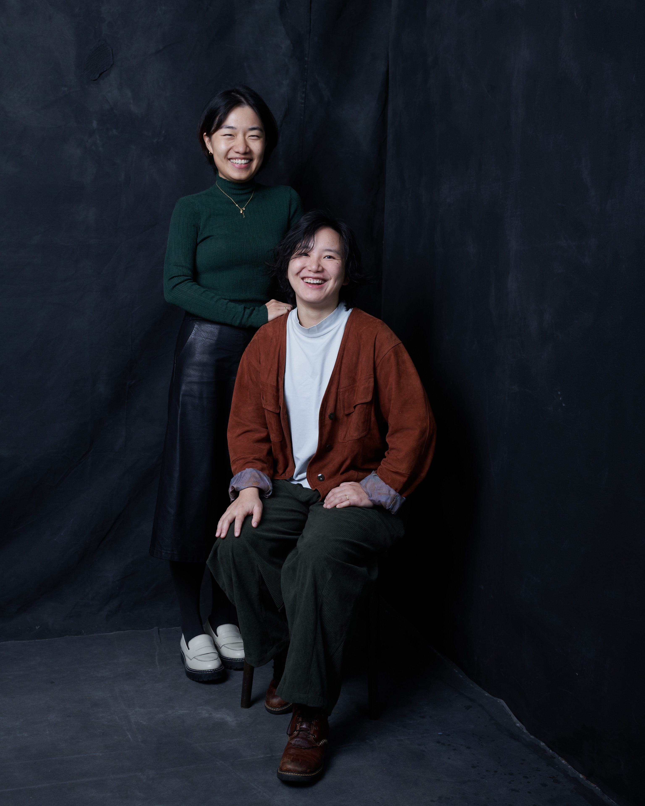

Principle One
Context First
Landscape, neighbouring fabric, and everyday movement patterns set the initial frame.
About Studio Yam

Studio Yu & Mei is led by directors Yuxiao Wang and Meilun, Sydney-based designers working across architecture, public art, and spatial storytelling. With backgrounds spanning leading Australian and International practices and large-scale public art delivery, the duo brings together architectural thinking, cultural research, and project delivery capabilities.
Their work explores the intersection of contemporary design, art and cultural narratives, creating spaces and experiences that are thoughtful, playful, and deeply connected to people and place.
Nominated Architect - Meilun Gao, NSW Architect Registration 13013
Principle One
Landscape, neighbouring fabric, and everyday movement patterns set the initial frame.
Principle Two
Strong drawings help keep the design coherent from concept stage through approvals and construction.
Principle Three
We aim for disciplined geometry without losing softness, tactility, or delight.